Camino a la GICSP — Cap. 3: Entendiendo Modbus TCP
¡Aviso! - Este es el capítulo 3 de una serie de blogs en los que explico cómo construí un laboratorio de automatización industrial con un ESP32. Si no has leído las entradas anteriores te las dejo aquí: Camino a la GICSP - Cap. 1 | Camino a la GICSP - Cap. 2
En los capítulos anteriores expliqué cómo había programado un ESP32 a modo de PLC y cómo, mediante el software de código abierto OpenPLC Editor, le había cargado un programa en Ladder a modo de prueba.
También expliqué cómo diseñé y cableé un circuito simple que consistía en un par de pulsadores y un led.
La entrada de hoy es un poco más interesante. Partiendo del laboratorio creado anteriormente, voy a explicar cómo conecté el ESP32 a la red utilizando su módulo Wi-Fi y cómo, mediante OpenPLC Runtime, envié comandos mediante el protocolo Modbus TCP. También vamos a destripar el protocolo mediante la herramienta Wireshark y ver qué secretos esconde, espero que os guste.
En el ESP32 devkit1, el modelo que he estado utilizando para el laboratorio, el módulo que se encarga de proporcionarnos conectividad Wi-Fi —y Bluetooth— es el ESP-WROOM-32 y este solo funciona con frecuencias de 2.4 GHz. Por lo tanto, para esta fase del laboratorio tuve que conectarme a la configuración del router y desactivar el band steering, que básicamente lo que hace es ofrecer la banda de mayor velocidad a los endpoints que tratan de conectarse; en el caso de mi router, simplemente fusiona la banda de 2.4 GHz con la de 5Ghz, mostrando un único SSID.
A continuación, descargué OpenPLC Runtime desde su sitio web: OpenPLC runtime
Este software de control industrial de código abierto actúa como el cerebro de un PLC, permitiendo convertir plataformas como un PC, una Raspberry Pi o un ESP32 en un PLC.
A diferencia de OpenPLC Editor —que utilizamos previamente para crear los programas en los lenguajes de programación estándar de PLC—, el Runtime es un motor sin interfaz gráfica (headless). En este laboratorio lo utilizaremos como el PLC 'maestro' encargado de ejecutar la lógica de control y comandar a nuestro ESP32, el cual funcionará como un dispositivo esclavo o de E/S remotas.
Un apunte para entender mejor la arquitectura del laboratorio: cuando cargamos el programa hacia el ESP32 desde el Editor, lo que realmente hicimos fue compilar e instalar un firmware específico que convierte al microcontrolador en un dispositivo periférico esclavo que ejecuta un programa en Ladder de manera cíclica.
Bien, una vez descargado e instalado, inicié la instancia en mi PC:
sudo systemctl start openplc-runtime.serviceA continuación, desde la interfaz de OpenPLC Editor, configuré el parámetro del ESP32 para que pudiera recibir comunicaciones mediante el protocolo Modbus TCP.
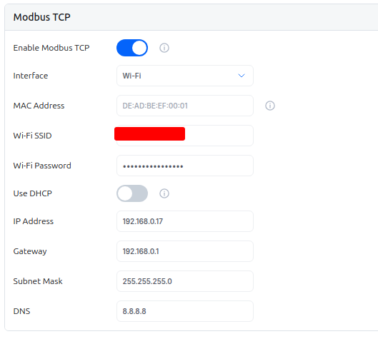
Y cambié el dispositivo en la configuración a la instancia de OpenPLC Runtime v4.
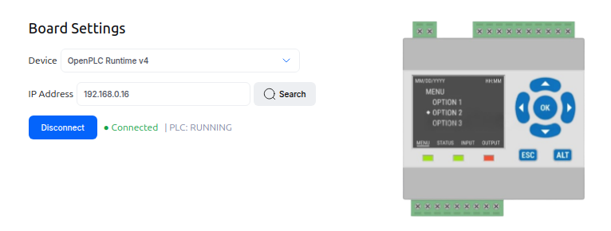
Y finalmente añadí el ESP32 como esclavo en el panel.
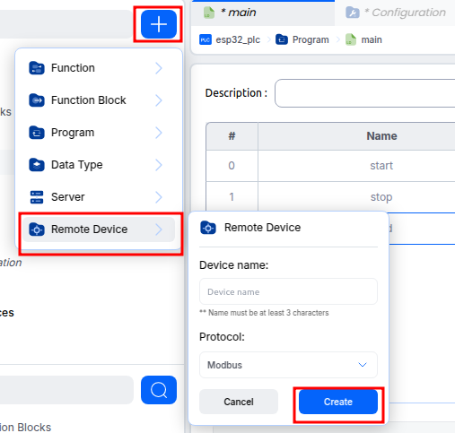
Dentro de la configuración de dispositivos remotos, le asigné la IP, el puerto, el ID de esclavo —esto se explica en más detalle más adelante— e hice el mapeo de entradas y salidas.
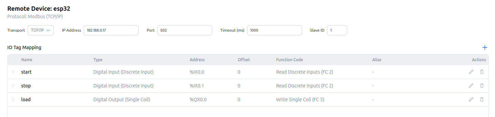
En este apartado se realiza el mapeo de variables, asignando las direcciones de memoria internas del PLC maestro (como %IX0.0 para entradas digitales y %QX0.0 para salidas digitales) a las funciones Modbus TCP específicas que interactuarán de forma remota con los pines físicos del ESP32.
Una vez asociadas estas variables, lo que hice fue poner a debuggear todas ellas, para poder interactuar con el entorno y cambiar sus estados.
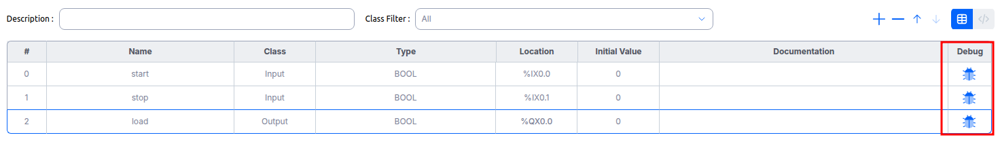
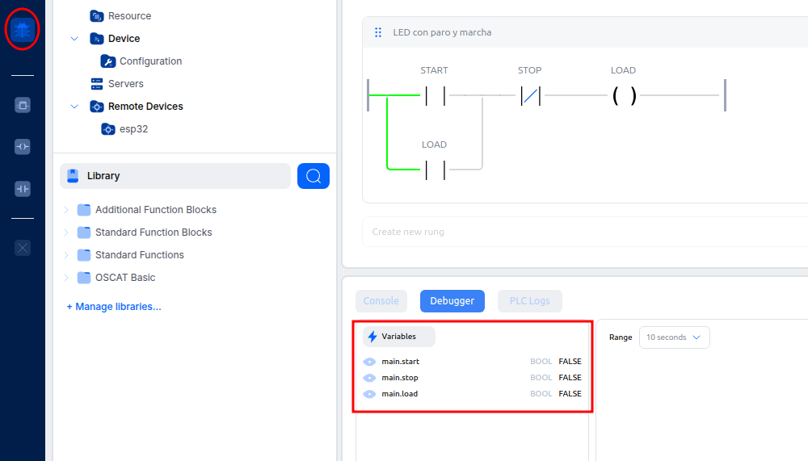
Ahora podía cambiar el valor de las variables desde el debugger y enviar estas órdenes desde mi instancia en OpenPLC Runtime, es decir, desde mi PLC maestro al ESP32, el esclavo.
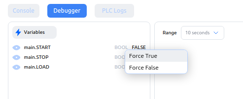
Entonces, si por ejemplo cambiaba de valor la variable START con un TRUE, el led se encendía.
Una vez establecida la conexión del ESP32 a la red local y configurado exitosamente como un dispositivo esclavo supeditado al PLC maestro —representado por la instancia de OpenPLC Runtime en el PC—, el siguiente objetivo consistió en analizar el comportamiento del protocolo Modbus TCP. Para ello, utilicé la herramienta de análisis de red Wireshark con el fin de capturar el tráfico de datos y examinar la estructura interna de los paquetes de comunicación.
Entendiendo Modbus TCP
Inicié Wireshark en mi interfaz de red:
sudo wireshark -i enp9s0Wireshark es una herramienta muy potente que nos permite filtrar por innumerables parámetros: puerto, IP, protocolos, etc.
En mi caso, simplemente me interesaba filtrar por el protocolo Modbus.
Una vez inicié el escaneo, empezaron a llegar tramas de comunicación en ambas direcciones: desde el maestro, representado por la IP 192.168.0.16, hasta el esclavo, con la IP 192.168.0.17.
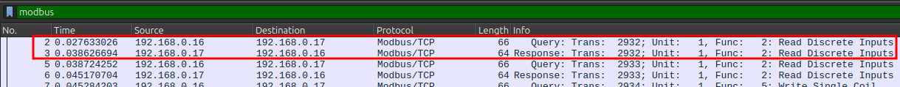
En estas tramas capturadas por Wireshark se podía apreciar el ciclo de pregunta y respuesta de Modbus TCP.
Este ciclo de pregunta-respuesta es típico de arquitecturas cliente-servidor o maestro-esclavo.
Esto asegura que en un entorno crítico —como puede ser el industrial— el maestro siempre sepa el estado del esclavo.
Vamos a analizar cada una de las tramas de la imagen de arriba para comprender mejor el protocolo de comunicación.
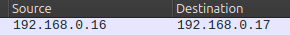
Vamos a comenzar analizando la trama nº 2, la pregunta que realiza el máster al esclavo.
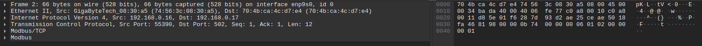
En Wireshark las tramas se dividen según el modelo OSI; al analizar en detalle la trama podemos ver cómo se nos muestra cada una de las capas de dicho modelo.
>> Antes de continuar, consideré conveniente analizar las diferencias entre Modbus TCP y Modbus RTU (la versión original en serie). Fundamentalmente, Modbus TCP encapsula la trama de datos de Modbus RTU dentro de un paquete TCP/IP para ser transmitido a través de redes Ethernet o Wi-Fi, en lugar de utilizar un bus de comunicación serie tradicional. Debido a esto, los dispositivos se identifican principalmente mediante su dirección IP dentro de la red local, delegando el clásico identificador de esclavo (Slave ID o Unit Identifier) a un rol secundario para la compatibilidad con pasarelas industriales.
En esta entrada del blog no me voy a detener en analizar cada una de las capas que nos ofrece Wireshark; solo me voy a centrar en las capas propias de Modbus (las de aplicación).
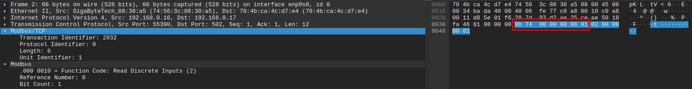
En la imagen de arriba se puede observar la cabecera MBAP de una trama Modbus TCP.
Esta cabecera consta de 7 bytes que contienen la siguiente información:
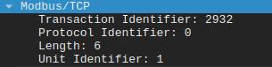
- Transaction Identifier (2 bytes): ID del mensaje (para emparejar pregunta/respuesta).
- Protocol Identifier (2 bytes): Siempre es 00 00 (significa Modbus).
- Length (2 bytes): Cuántos bytes vienen a continuación.
- Unit Identifier (1 byte): El "ID de esclavo" (tradicional de Modbus RTU, en TCP suele ser 01 o FF).
>> Unit Identifier: Heredado del "ID de esclavo" tradicional de Modbus RTU. En conexiones directas Modbus TCP de punto a punto (como en nuestro laboratorio), la identificación del dispositivo ya se realiza mediante la dirección IP en la capa de red, por lo que este campo suele fijarse por defecto en 01 o FF. Sin embargo, sigue siendo fundamental en entornos industriales para permitir que los gateways enruten los paquetes desde una red Ethernet TCP hacia dispositivos específicos en una red serie. Básicamente, retrocompatibilidad.
Una vez visto el header, vamos a ver la PDU (Protocol Data Unit) representada por 5 bytes.
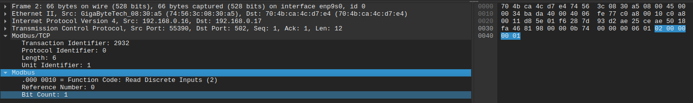
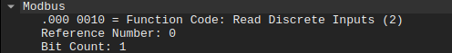
En el bloque de la PDU podemos observar 3 campos principales:
-
Function Code (1 byte): Este byte dice qué hacer. En
nuestro caso, está tratando de leer el input digital del
PLC —función 02—. Existen varias funciones, entre ellas:
- 01 - Read Coil Status
- 02 - Read Discrete Input
- 03 - Read Holding Registers
- 04 - Read Input Registers
- 05 - Write Single Coil
- 06 - Preset Single Register
- 15 - Force Multiple Coils
- 16 - Preset Multiple Registers
- 17 - Report Slave ID
-
Reference Number / Reference Address (2 bytes):
Aquí está la dirección; son dos bytes que indican la
posición exacta de memoria en el ESP32 a la que intenta
acceder el máster.
- Para IX0.1 (dirección 1) sería: 00 01
- Si fuera la dirección 10, sería: 00 0a
- Bit count: Indica, literalmente, cuántos bits consecutivos quiere leer o escribir el máster a partir de la dirección inicial.
Si ahora nos vamos a la trama de respuesta podremos entender mejor esta última parte:
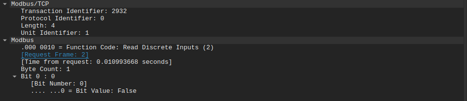
El campo Bit count de la trama del máster nos indicaba que este trataba de leer 1 bit del esclavo referente a su input digital, y en la respuesta se nos muestra ese bit con un 0 que representa falso. Es decir, el maestro pregunta al esclavo si su pin digital X está activo y este le contesta que no.
Si ahora forzáramos de forma virtual a TRUE (1) la dirección %IX0.0 (nuestra entrada digital), la lógica de enclavamiento del programa Ladder se activará, conmutando la salida '%QX0.0' y provocando que el máster envíe una orden de escritura (Función 5) para encender el LED físico.
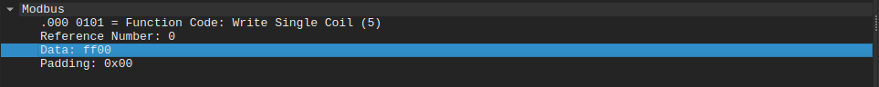
En este caso, vemos que la función 5 cambia la estructura de la PDU dándonos campos específicos:
- Output Address (2 bytes): La dirección física de la salida que queremos conmutar.
- Data / Write Value (2 bytes): El estado que el máster quiere asignar a esa dirección:
- FF 00 para activar (ON)
- 00 00 para desactivar (OFF)
>> Nota sobre el Padding: Verás que Wireshark añade una sección de "Padding" al final del paquete. Esto no pertenece a Modbus, sino a la capa de enlace (Ethernet). El estándar exige que las tramas tengan un tamaño mínimo de 64 bytes, por lo que la tarjeta de red añade bytes de relleno para alcanzar esa longitud en mensajes tan cortos.
Y hasta aquí el capítulo de hoy. Hemos visto como crear una red Modbus con OpenPLC y hemos indagado un poco con Wireshark en el protocolo para entender un poco más de él.
Antes de despedirme quisiera hacer unos apuntes: Para quien quiera experimentar con Modbus TCP e indagar por su cuenta, no es necesario armar tanto jaleo como he hecho yo, existen simuladores de Modbus como Modpoll, que te permiten, emular una comunicación Modbus TCP.
Otro apunte más es que durante el artículo hablo constantemente de maestro-esclavo, esta nomenclatura es "antigua" y se utiliza más comúnmente en la versión RTU de Modbus, Modbus TCP es una arquitectura cliente-servidor, asi que no sería correcto llamarlo maestro-esclavo.
En el próximo capítulo mi intención es complicar un poco las cosas, conectaremos un par de PLCs más al sistema y ulitizaremos un software SCADA libre como es SCADA BR para llevar el comando y control de manera centralizada. También exploraremos la herramienta NMAP en estos entornos y veremos como se puede atacar una red industrial, se viene lo bueno.
Y hasta aquí, espero que hayaís disfrutado de la lectura tanto como yo de esta inmersión en el protocolo Modbus TCP y hasta la próxima.
EnRoot